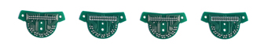
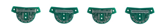
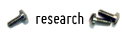
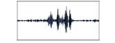
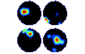
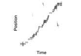

|  |
 One second of electrical activity in the hippocampus during a sharp-wave–ripple event. |
Welcome to the Wilson Lab Our laboratory studies the neural processes within the hippocampus and neocortex that enable memories to form and persist over long periods of time. We use a technique that allows us to simultaneously record the activity of hundreds of individual neurons across multiple brain regions in freely behaving animals. When combined with genetic, pharmacological, and behavioral manipulations, these recordings allow us to gain a mechanistic understanding of how animals learn and remember. Currently, an important focus of our laboratory is the reactivation of sequential activity in neural ensembles during waking and sleep. Because many cells in the hippocampus represent specific locations, we can use their firing patterns to reconstruct movement trajectories that are being "replayed" during periods of rest. The function of such replay is not well understood, but it may play a role in memory consolidation, or even in action planning. We also study the interplay between the hippocampus and other brain regions, such as prefrontal cortex, cingulate cortex, thalamus, and the ventral tegmental area. Understanding how activity is coordinated between multiple areas is likely to be crucial for understanding how memories are stored and retrieved. The members of our laboratory have always been committed to methodological innovations. Recent advancements include motorized microdrives for improving tetrode yield and stability, the ArtE system for real-time feedback during experiments, and new computational tools for the analysis of neural activity. Taken together, these approaches contribute to the overall research objective: to understand the link between neural ensemble representations and cognitive capabilities.
|
 Firing fields of four hippocampal neurons in a circular environment. Note that each cell is most active in one region. |
|
 An example movement trajectory reconstructed from the sequential activity of hippocampal neurons while the animal is stationary. |
|